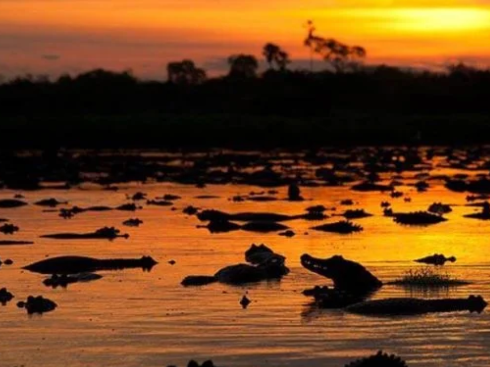

O estado de Mato Grosso do Sul, localizado na Região Centro-Oeste do Brasil, destaca-se por sua rica biodiversidade e forte presença do turismo ecológico. Grande parte de seu território abriga o Pantanal, uma das maiores áreas úmidas do planeta, reconhecida pela abundância de fauna e flora. A economia sul-mato-grossense é baseada no agronegócio, com destaque para a pecuária e o cultivo de soja, milho e cana-de-açúcar. Sua capital, Campo Grande, é conhecida como “Cidade Morena” e se destaca pela organização urbana e qualidade de vida. Além disso, o estado possui forte influência cultural indígena e fronteiriça, refletida em suas tradições, culinária e diversidade cultural.
